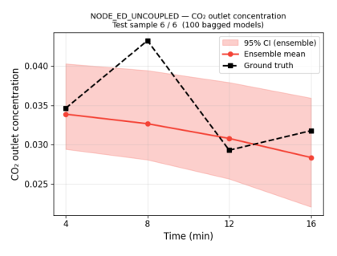
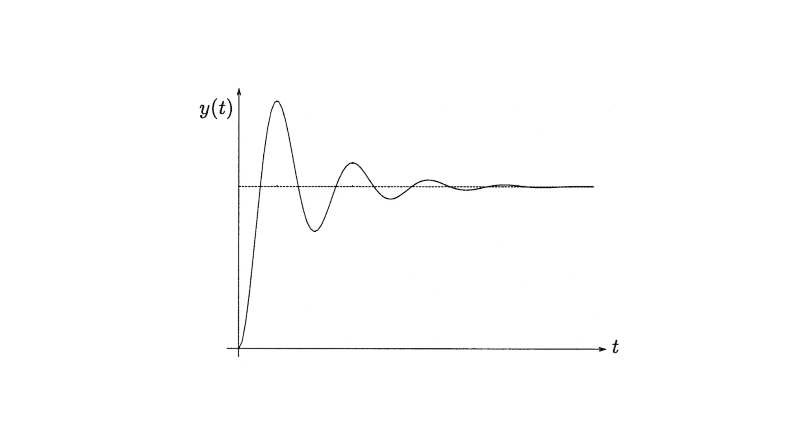

Current gaps and opportunities for further research

To further examine the small performance improvement, the R² value for CO2 prediction at each time step for NODE-ED-Uncoupled with SS-C-PD was analysed against the experimental data in Figure 6.1. The plot indicates that prediction errors are generally small across all time steps except 8 mins, where an unexpected peak is observed under certain operating conditions for the experimental data.
This unexpected behaviour was observed at a couple of operating conditions and is also reproducible across repeated experimental runs. This indicates that there is a phenomenon that is governing that behaviour, which the current understanding of mass transfer and reaction kinetics cannot represent. As a result, it contributes extremely disproportionately to the overall error.
One possible hypothesis is that hydraulic effects may have contributed to the observed peak. In packed columns, hydraulics refer to fluid flow behaviour that may result in delayed transport of fluid through the column. During such cases, an underdamped second-order dynamic system response may occur60, which resembles closely with the sudden observed peak as shown in Figure 6.2. As such, incorporating hydraulic considerations represents a promising direction for future work to address the primary source of error associated with the unexplained peak.

Additionally, this work has focused only on developing an offline model, that is, a model pretrained on a fixed dataset spanning different operating conditions. While this demonstrates predictive potential, a more impactful next step is to integrate an online version of the model into a controller framework, particularly Model Predictive Control (Section 2.2.2), and evaluate its feasibility for controlling CO2 chemisorption at pilot scale. At pilot scale, additional performance metrics become directly relevant. Quantitative measures for controllers such as settling time, overshoot, and rise time are standards for evaluating online controller performance and can better quantify the real-world impact of the developed model.